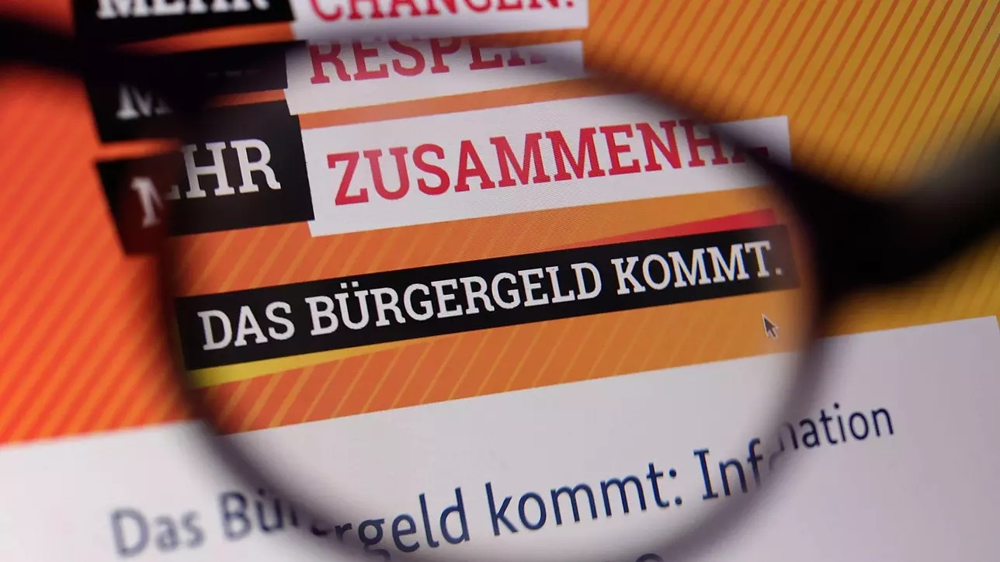

Bürgergeld: Daten- und Faktenüberblick
Was stimmt beim Bürgergeld wirklich? Ein Überblick über die wichtigsten Kennzahlen — von Empfängerzahlen über offene Stellen bis zu den Kosten.
In der öffentlichen Debatte über das Bürgergeld kursieren viele Behauptungen. Dieser Faktencheck fasst die wichtigsten Kennzahlen auf Basis offizieller Quellen zusammen.

5,5 Mio.
Bürgergeld-Empfänger gesamt
1,6 Mio.
Dem Arbeitsmarkt verfügbar
563 €
Regelsatz pro Monat
5,56 %
des Bundeshaushalts
1,34 Mio.
Offene Stellen in Deutschland
Verteilung der Bürgergeld-Empfänger
Gesamtzahl: 5,5 Millionen, davon sind nur 1,6 Millionen tatsächlich dem Arbeitsmarkt verfügbar.
Offene Stellen
Den 1,6 Millionen verfügbaren Bürgergeld-Empfängern stehen in Deutschland 1,337 Millionen offene Stellen gegenüber, davon 1,1 Millionen sofort zu besetzen. Die rechnerische Lücke zwischen Verfügbaren und offenen Stellen beträgt damit rund 300.000 Personen.
Quelle: Institut für Arbeitsmarkt- und Berufsforschung (IAB), Stand: 13. November 2024Zahl der „Totalverweigerer“
Die Bundesagentur für Arbeit gibt die Zahl der sogenannten Totalverweigerer — Personen, die im vergangenen Jahr alle Jobangebote oder Weiterbildungen abgelehnt haben — mit rund 16.000 an. Das entspricht ca. 1 % der dem Arbeitsmarkt verfügbaren Empfänger.
Quelle: SWR Aktuell, Stand: 13. November 2024Arbeit lohnt sich
Berechnungen des ifo Instituts zufolge hat, wer arbeitet und alle Sozialleistungen in Anspruch nimmt, immer mehr verfügbares Einkommen als jemand, der nicht arbeitet und nur Sozialleistungen erhält. Der oft behauptete „Fehlanreiz“ lässt sich damit nicht belegen.
Quelle: ifo Institut, Stand: 17. Januar 2024Keine Kündigungswelle wegen Bürgergeld
Seit der Einführung des Bürgergeldes 2022 gehen deutlich weniger Menschen aus ihren Jobs ins Bürgergeld als zuvor. Eine Kündigungswelle, wie sie teils befürchtet wurde, ist in den Daten nicht erkennbar.
Quelle: Bundesministerium für Arbeit und Soziales (BMAS), Stand: 24. Juli 2024Was kostet das Bürgergeld?
Die Bundesagentur für Arbeit gibt im Jahr 2024 voraussichtlich 26,5 Milliarden Euro für das Bürgergeld aus — das entspricht 5,56 % des Bundeshaushalts. Inklusive Wohn- und Heizkosten sowie Verwaltungskosten steigt die Zahl auf ca. 47,2 Milliarden Euro (9,9 % des Bundeshaushalts).
Quelle: Bundeshaushalt digital, Stand: 13. November 2024Wie hoch ist der Regelsatz?
Ein alleinstehender Erwachsener erhält aktuell 563 Euro im Monat — 61 Euro mehr als unter Hartz IV. Für 2025 ist eine Nullrunde vorgesehen, der Satz bleibt damit konstant.
Quelle: Die Bundesregierung, Stand: 10. Oktober 2024